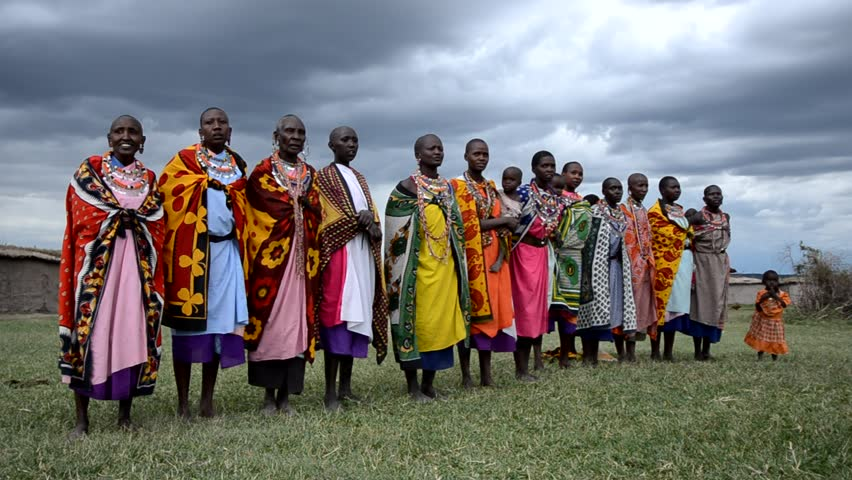
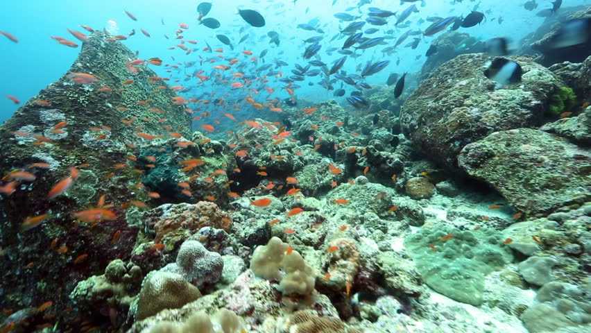

Growing up by the ocean has a profound impact on peoples' lives. It often defines what you eat, where you work, and how you spend your free time. Without a healthy ocean, many traditions of peoples around the world will be lost forever.
Our ocean is life. Literally. Over 4 billion years ago, the first-ever life forms developed in the ocean. By now, over 200,000 distinct species have been identified, but we're far from done exploring. Researchers discover new marine species on a daily basis.
